라즈베리파이에서 NPM (Nginx + PHP + MariaDB) 설치하기
라즈베리파이 또는 리눅스에서 NPM (Nginx + PHP + MariaDB) 설치하기
안녕하세요.
이번에 소개할 내용은 라즈베리파이 또는 리눅스에서 NPM (Nginx + PHP + MariaDB) 설치하기 입니다.
그리고 저는 라즈베리파이를 이용해서 설치를 하겠습니다.
많은 분들이 저렴한 가격으로 홈 웹서버를 구축할수 있게 따라만 하시면
누구나 다 웹서버를 구축하실수 있습니다.
우선 준비물이 필요 합니다.
준비물
라즈베리파이 가장싼 제로도 가능 합니다.
저는 이번에 660엔(약 7천원)짜리 Raspberry Pi Zero v1.3을 이용해서 설명을 드립니다.
라즈베리파이 제로 1.3에 대해 간략하게 설명을 드리면
우선 싱글코어에 512램 그리고 끝입니다. 모니터에 연결을 할수있게 HDMI는 지원합니다.
블루투스나 와이파이 유선랜이 기본적으로 제공되지 않기때문에 별도 모듈을 구매 하셔야만 합니다.
거기다 GPIO를 이용하실려면 별도의 핀소켓도 구매하신후 납땜을 해주셔야만 합니다.
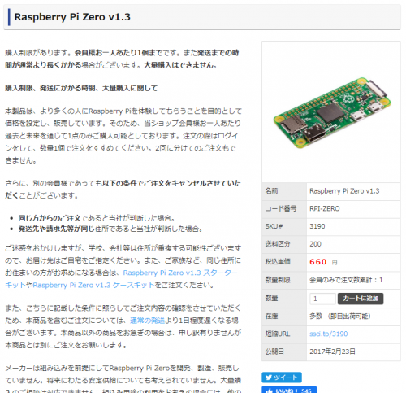
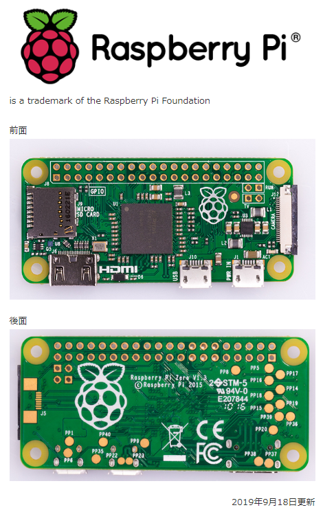
싱글코어이다보니 초기 세팅에 시간이 많이 소요가 되었습니다.
테스트용으로 사용하실게 아니면 별로 추천을 안드리겠습니다.
그래서 이제부터 NPM 구축하는 방법을 설명해 드리도록 하겠습니다.
우선 VNC로 라즈베리파이에 접속을 해주시고 터미널을 실행해 주세요.
터미널을 실행이 되셨으면 아래의 명령어를 차례대로 입력해 주시기 바랍니다.
1 | $ sudo apt update |
이렇게 해서 APT를 최신상태로 갱신이 완료 되었습니다.
만일 최신버전이 있을경우가 있기때문에 APT로 프로그램을 설치하실 경우 우선 최신으로 갱신을 해주시기 바랍니다.
이제 본격적으로 Nginx를 설치를 하도록 하겠습니다. 아래의 명령어를 입력해 주세요.
1 | $ sudo apt-get install nginx |
Nginx설치가 완료 되었습니다.
Nginx서버를 시작만 하면 됩니다.
처음 Nginx를 설치하시면 웹사이트 디렉토리가 /var/www/html 로 설정되어 있습니다.
그래서 그대로 사용하실분은 설정을 하지 않으셔도 됩니다만
만일 삼바를 설치하신 분들은 삼바 디렉토리 설정을 별도로 하지 않으신경우 /var/www/html 경로까지 권한문제로 이동을 하실수 없습니다.
그렇기에 기본 디렉토리를 변경해 주도록 하겠습니다.
설정을 변경하기 전에 www 폴더를 만들어 주도록 하겠습니다.
저는 /home밑에 www 폴더를 만들겠습니다.
1 | $ sudo mkdir www |
폴더를 만드시고 리스트를 출력하시게 되면 폴더의 사용자와 그룹이 root로 되어있는것을 보실수 있습니다.
root를 pi계정이 읽고 쓰기가 가능하도록 권한자를 변경하도록 하겠습니다.

1 | $ sudo chown pi:pi ./www |
명령어를 입력하시면 폴더의 권한자와 그룹이 pi로 변경되신것을 확인 하실수 있습니다.
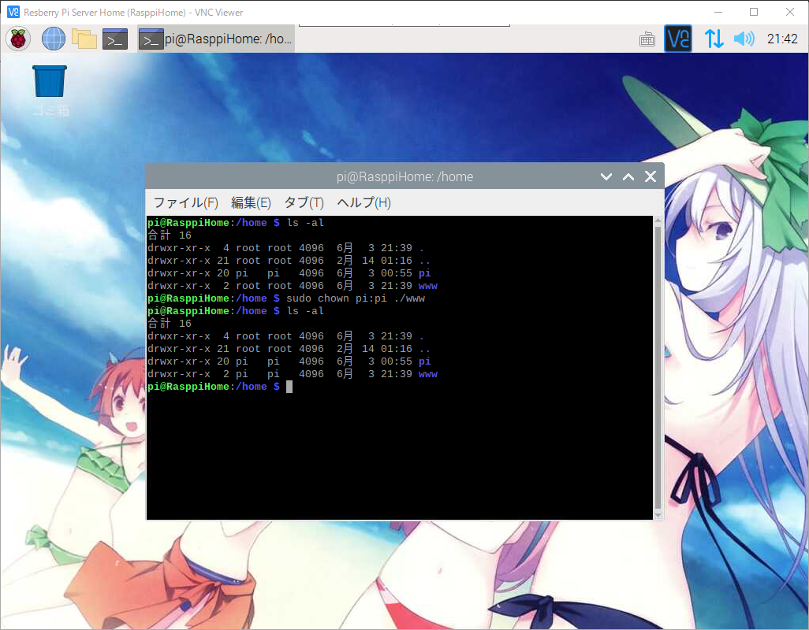
이제 Nginx의 설정을 변경하도록 하겠습니다.
그전에 www폴더까지의 절대패스를 확인 합니다.
아래의 명령어를 입력해 주세요.
1 | $ sudo vi /etc/nginx/sites-available/default |
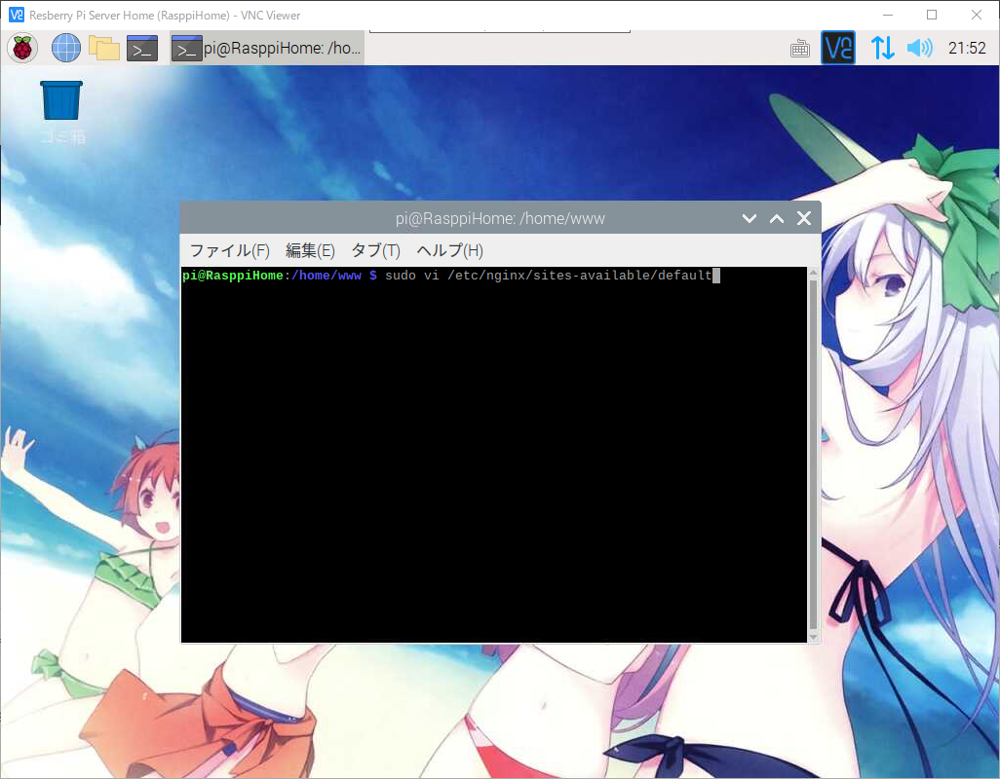
중간쯤 스크롤을 내리다 보시면
1 | root /var/www/html; 부분이 보이게 됩니다. 이부분을 아래와 같이 입력해 주세요. |
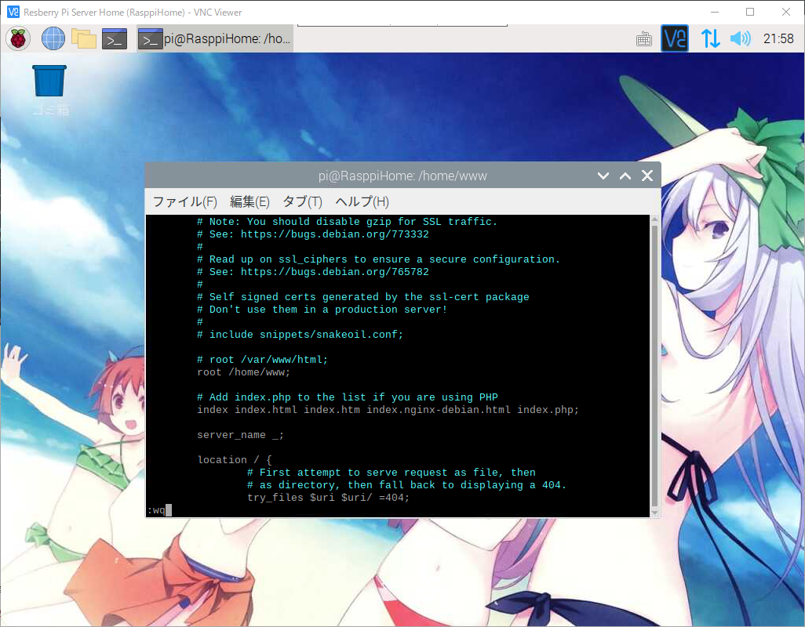
저장을 하시고 vi에디터에서 나오시면 되겠습니다.
설정정보를 반영을 해야하기때문에 Nginx서버를 재기동 합니다.
1 | $ sudo service nginx restart |
일단 Nginx서버가 제대로 설치가 되었는지 일단 라즈베리파이 아이피를 브라우저에 입력해서 접속을 해보시면
기본페이지를 올려둔게 없는 관계로 아래와 같이 표시가 되면 제대로 된것 입니다.
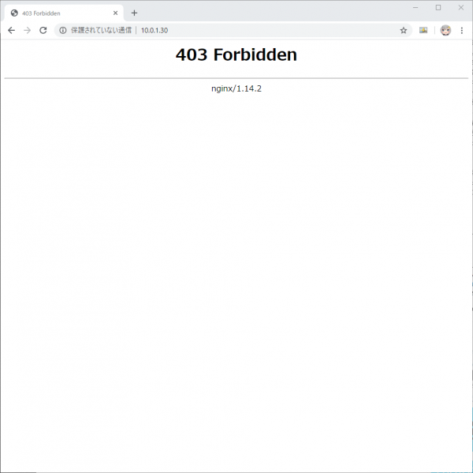
이제부터 PHP를 설치를 하도록 하겠습니다.
아래의 명령어를 차례대로 입력해 주시기 바랍니다.
1 | # 설치전에 갱신을 한번 합니다. -y는 예/아니오를 |
이렇게 해서 PHP설치가 완료 되었습니다만 Nginx에서 추가설정을 하셔야만 합니다.
아래의 명령어를 입력해 주세요.
1 | $ sudo vi /etc/nginx/sites-available/default |
1 | location ~ \.php$ 부분이 나오는곳이 보이시면 아래와 같이 #을 제거를 해주시기 바랍니다. |
주석을 다 제거를 해주셨으면 아래와 같이 :wq 명령어를 입력후 저장후 빠져나오시기 바랍니다.
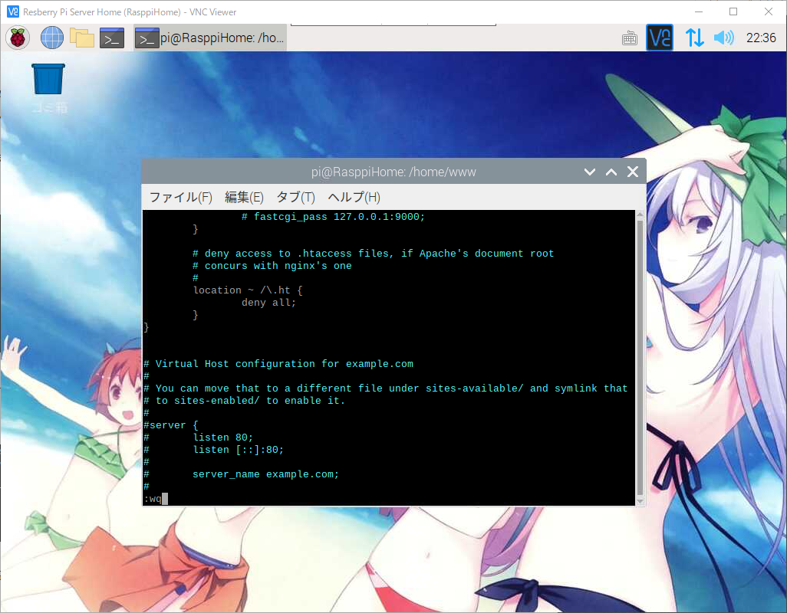
아래의 명령어를 입력하여 Nginx서버를 재기동을 합니다.
1 | $ sudo service nginx restart |
이제 PHP설치와 기본설정이 끝났기에 이젠 PHP가 정상설치 되었는지 확인해 보도록 하겠습니다.
아래의 명령어를 차례대로 입력해 주시기 바랍니다.
1 | # 각자 설정하신 루트 디렉토리를 이동해 주세요. |
1 | # vi 에디터가 열리시면 아래의 문장을 입력해 주세요. |
이제 다시 브라우져를 여시고 라즈베리파이 아이피 + /info.php를 브라우저에 입력해서 접속을 해주시기 바랍니다.
아래와 같은 화면이 나오시면 PHP가 정상설치 되셨습니다.
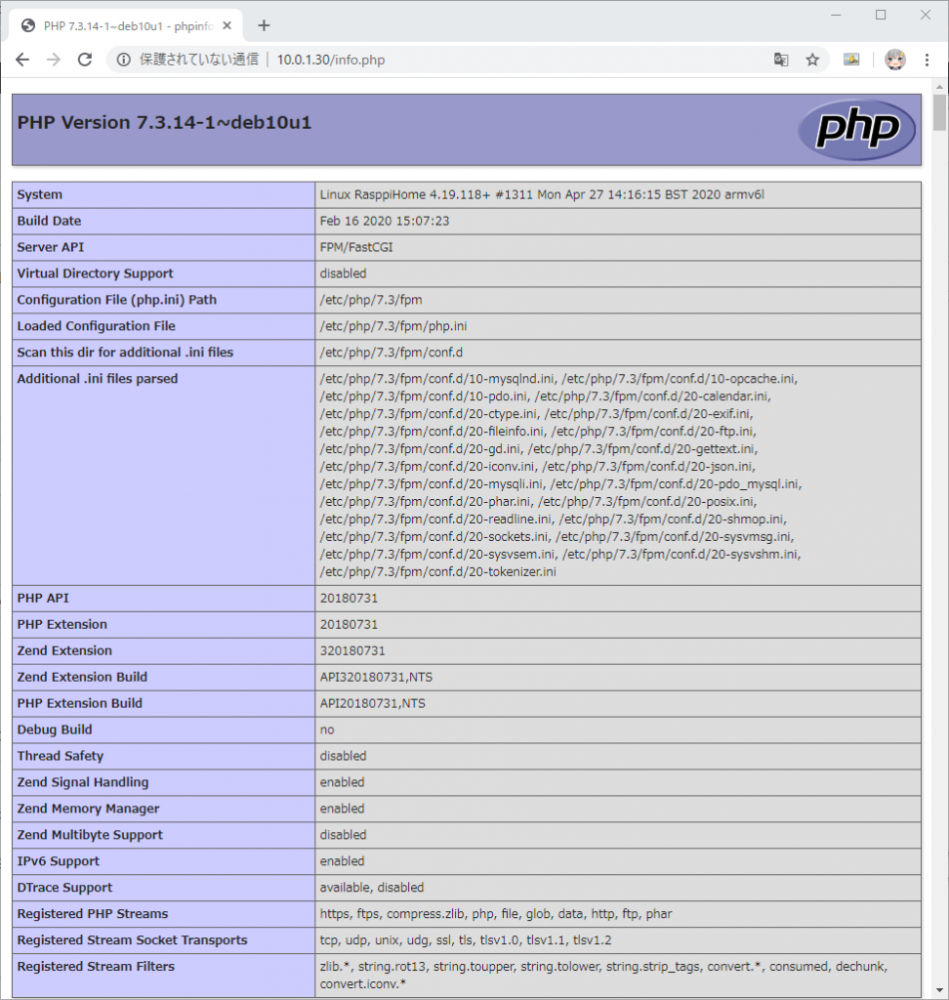
이젠 MariaDB를 설치하도록 하겠습니다.
원래 MySQL이었지만 오라클이 MySQL을 인수하면서 MySQL개발하신 분께서 기존 엔진을 가지고
새로만든 DB가 MariaDB입니다.
그럼 아래의 명령어를 입력해 주세요.
1 | $ sudo apt-get install mariadb-server |
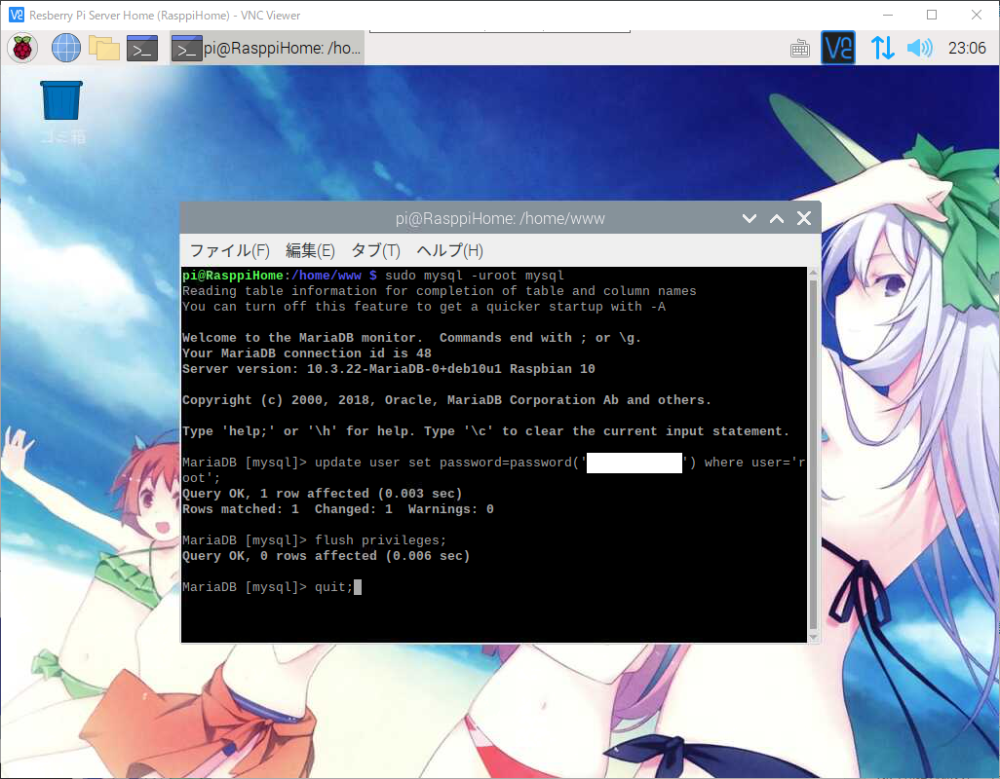
여기까지가 NPM 구축하기가 끝났습니다.
덤으로 phpMyAdmin을 설치해서 디비를 좀더 편하게 관리할수 있도록 하겠습니다.
아래의 명령어를 입력해 주세요.
1 | $ sudo apt-get install phpmyadmin |
설치하는 도중에 갑자기 이런 화면이 나오게 되시면 일단 둘다 설치한게 없기에 그냥 넘기시면 됩니다.
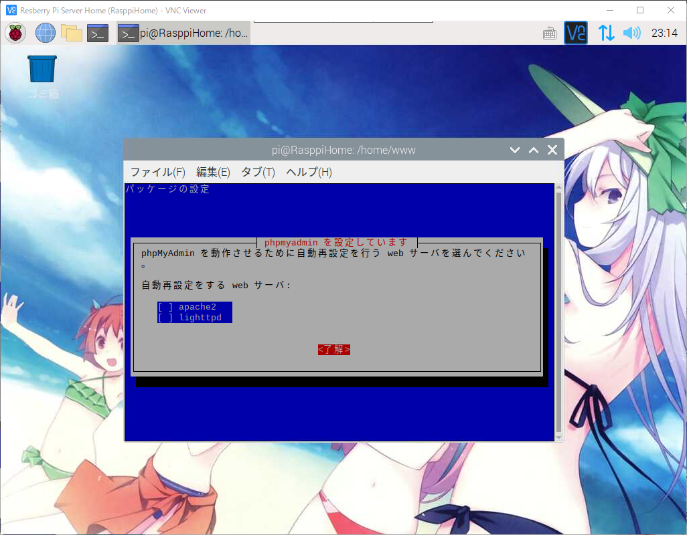
아래와 같은 화면이 다시 등장하시면 여기서도 아니오를 해주시기 바랍니다.
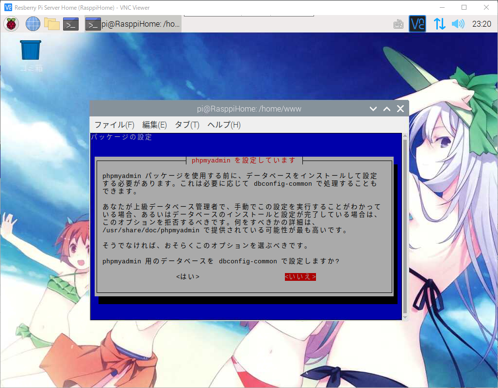
phpMyAdmin설치가 끝났습니다.
그럼 아래의 명령어를 입력해서 홈페이지의 루트 디렉토리에서 phpMyAdmin 페이지에 접속할수 있게 해줍니다.
1 | # /home/www 디렉토리에 심볼릭 링크로 phpMyAdmin을 연결시킵니다. |
심볼릭 링크가 정상적으로 연결된것을 확인 하실수 있습니다.
이제 phpMyAdmin을 정상으로 뜨는지 해보도록 하겠습니다.
브라우저를 실행하신후 http://아이피주소/phpmyadmin 주소를 입력해 주세요.
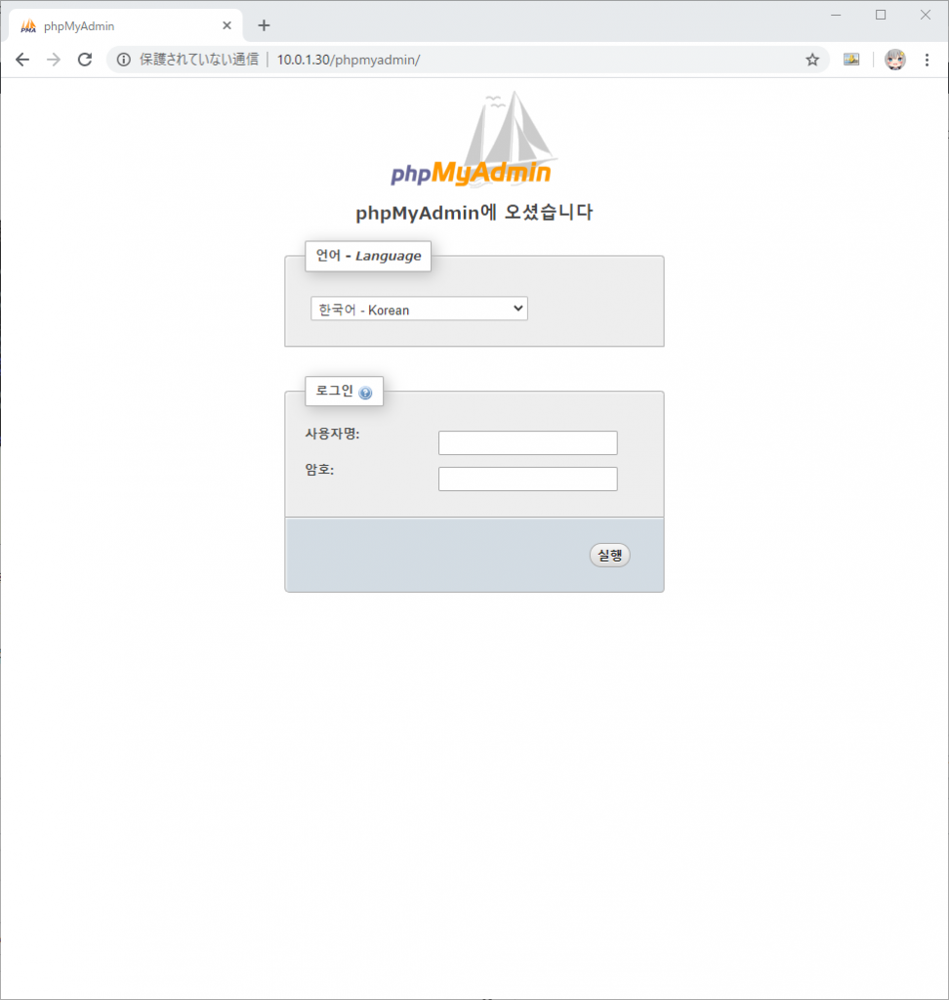
정상적으로 phpMyAdmin이 열린것을 확인 되었습니다.
이것으로 NPM (Nginx + PHP + MariaDB) 설치하기가 완료 되었습니다.